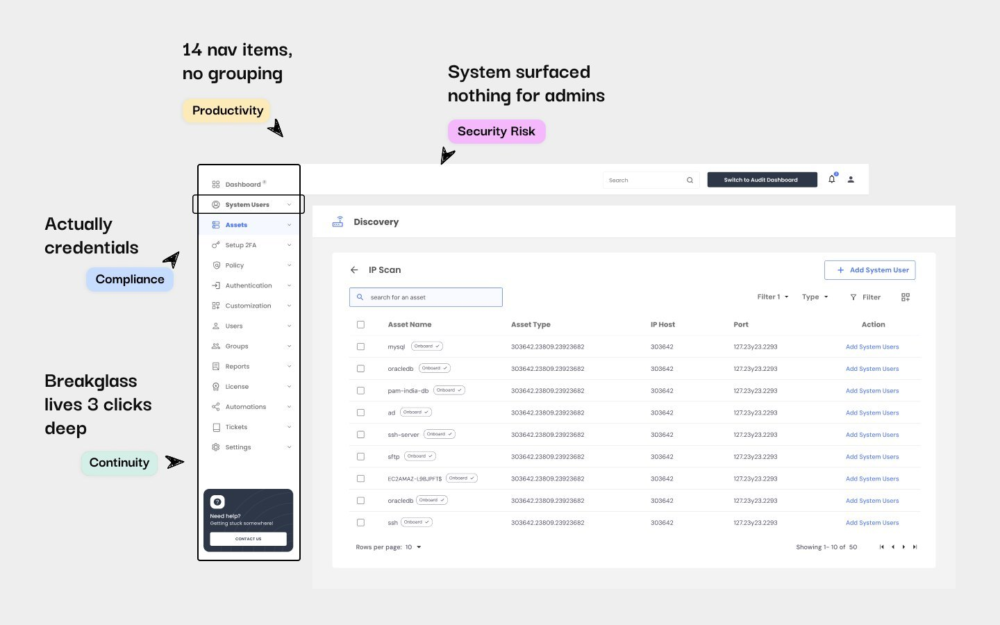
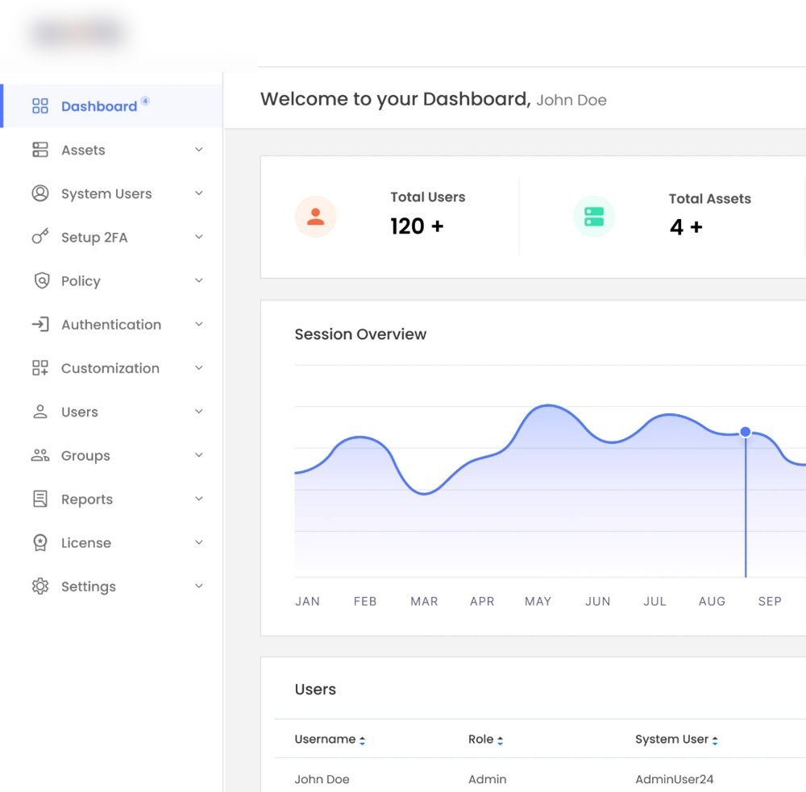
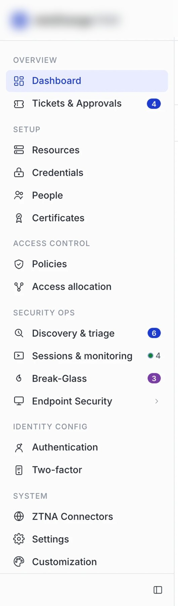
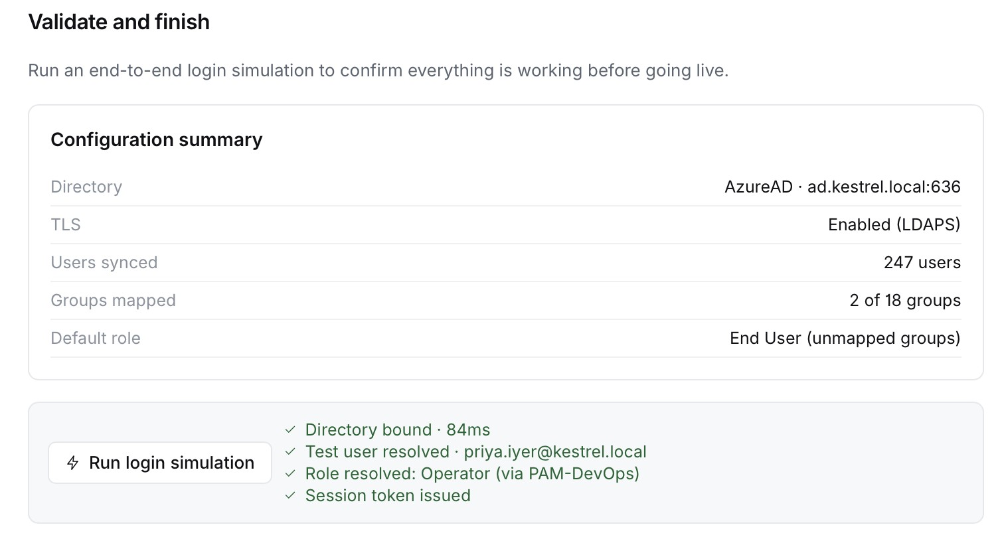
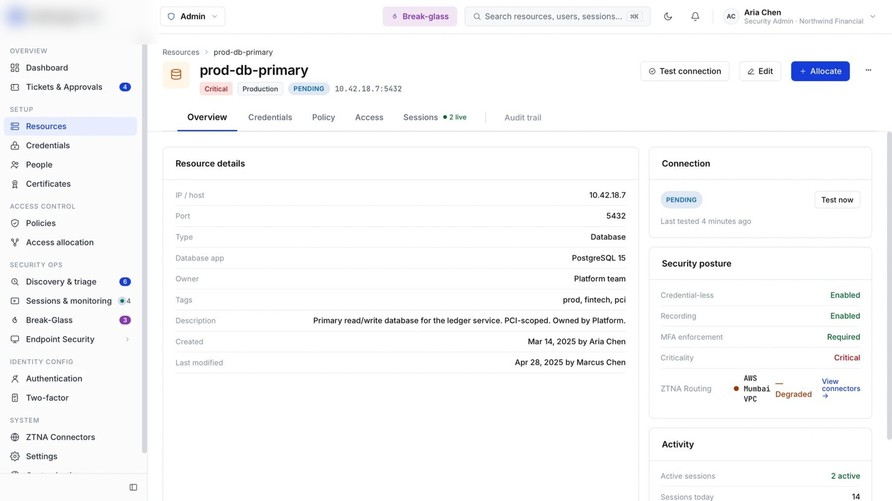
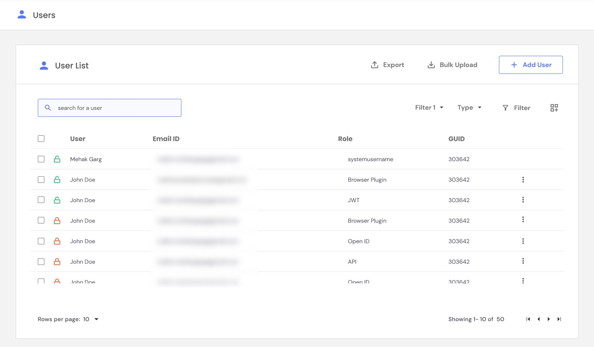
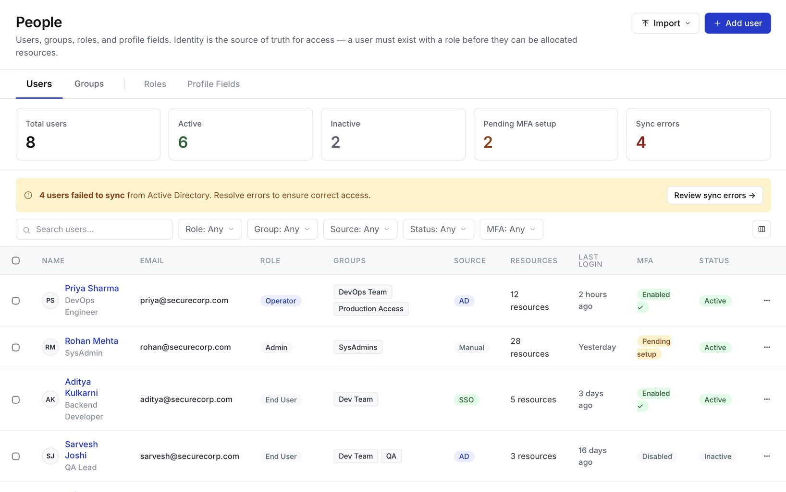

From stalling at proof of concept to $800K in new sales.
A prospect's admin would log in for a proof of concept, get lost within the hour, and the deal would stall. The expected fix was to polish the worst screens. Instead, I traced 140 issues to four root causes and rebuilt the product around the two moments that decided every deal.
DURATION
7 months
ROLE
Design lead
TEAM
2 PMs · 40 eng
USERS
Security admins
STATUS
LIVE in production
RESULT
$800K new sales
$800K
in new sales after launch
11% → 18%
conversion rate, within 6 months
½ the time
deployment, 3 weeks → 1.5 weeks
4.8★
rated by customers on Gartner Peer Insights
← BEFORE14 flat items, organised by database object
5 groups, organised by what the admin is trying to doAFTER →
On paper it matched CyberArk and Delinea. In a prospect's hands, it lost the deal in the first hour.
Privileged access management decides who can touch a company's most sensitive systems: production databases, servers, admin accounts. When it fails, the cost is not a bad experience. It is a breach. So buyers judge a PAM product on one question above all others: can my team run this safely from day one?
Our product had every capability that mattered: vaulting, session recording, access policies, discovery and MFA. Then a prospect's admin logged in for a proof of concept and found 14 ungrouped navigation items, workflows split across sections, and failures that happened without a word. Within the first hour, they were calling support. Even our own sales engineers sometimes asked me where a feature lived.
11%TRIAL TO PAID CONVERSION
3 weeksAVERAGE TIME TO DEPLOY
First 30 minWHERE POC DEALS STALLED
This was not a feature gap. It was a comprehension gap, and it was costing us deals.
The first 30 minutes of a proof of concept00:00 → 30:00
01Add their first server14 nav items, none called "add a resource"RC1
02Store the server's admin credentialCredentials live under "System Users." Users live somewhere else.RC2
03Run discovery on the network200 accounts found. No next step.RC3
04Give a teammate accessResource, policy and role sit in three sections that don't talkRC3
05Launch a test sessionIt failed. Nothing said why.RC4
30:00 · THE ENDCalls support. Proof of concept stalls.
Before touching a screen, I rebuilt 10 real admin scenarios. 140 issues traced back to 4 root causes, and 2 scenarios decided every deal.
The instinct was to redesign the worst screens first. I pushed back for two weeks. Instead, I rebuilt real admin scenarios from customer success call recordings and support tickets: day one onboarding, break glass during a Sev 1, rotating 200+ credentials, and the audit review before a compliance call.
10SCENARIOS
4PERSONAS
140ISSUES
3 weeksTO FIND THE ROOT CAUSES
RC1
Fragmented information architecture
14 flat nav items. You had to know the internal object model to find anything.
RC2
Broken domain terminology
New admins spent their first week translating the interface.
RC3
No workflow continuity
JIT, approvals and break glass were missing or scattered.
RC4
Silent failure states
Errors weren't surfaced, so admins couldn't tell what broke.

RC1RC4RC2RC3
FIG. 2 — THE ORIGINAL PRODUCT, ANNOTATED AGAINST RC1–RC4the pieces were all there. nothing held them together.Next: deciding where to start ↓
03 / 07
The decision
140 issues. One question.
Where to start. The PM wanted Kano, the eng lead wanted RICE, and the two frameworks we'd tried the quarter before had given us two different answers. I suggested something blunter.
THE ONLY QUESTION
Does this directly strengthen one of the five capabilities that win or lose an enterprise PAM deal?
Vault and RotationDiscovery and InventorySession Proxying and RecordingAccess GovernanceIntegrations and Auditability
RESULT
140+→14→6
ISSUESPRIORITIESMUST FIX
30% of nice-to-have scope discussions cut. Engineering unblocked for two quarters.
THE HARDEST CALL
Self-service access, ranked last
Self-service should scale safe access, not unsafe autonomy. It waits until the core access loop is trustworthy.
"Her audits are surgical. She found 140+ issues across our product and ranked them so we could ship fixes inside a quarter."
I redesigned in the order my audit set: fix the structure first, then rebuild the two journeys every admin depends on, getting set up and granting access.
FOUNDATION
Navigation by intent
FIXES RC1
The old navigation was organised by database object: System Users, Groups, Certificates, Policies. The new one is organised by what the admin is trying to do. Break glass now lives under Security Ops, and an admin can find it on day one without the docs.
14→5FLAT ITEMS → INTENT GROUPS
How I got to five groups: I followed the audit's own recommendation and grouped all 14 items by workflow phase — setting up, controlling access, running security operations and configuring identity, with an overview on top. Then I walked each audit scenario through the new structure to check that the admin stayed inside one group instead of jumping across the nav.


before, by object → after, by intent
FLOW A
Day one onboarding
FIXES RC3 + RC4
THE OLD PATH
Setting up identity alone meant 14 tasks spread across 4 sections: Authentication, Users, Settings and Two Factor. Role mapping was buried in the second scroll of the SSO config. A failed directory bind gave no reason, whether a wrong URL, wrong credentials or a network issue. The only way to test a synced login was hidden inside "Show Machine Scan Results." A first-time admin needed a support call every time.
4 sections→1 guided flow
WHAT I EXPLORED
REJECTEDPatch each screen where it lives · The audit showed these gaps were structural. One logical setup sat across four sections, and no screen-level fix could connect them.
REJECTEDOne long setup wizard · The audit had already shown what happens when every field arrives at once. The LDAP form overwhelmed first-time admins.
CHOSENSix-stage onboarding · It breaks setup into stages an admin can finish and verify one at a time, and it turns setup into the proof of concept itself.
THE DECISION
Six stages in the order a real deployment happens: connect identity → add resources → vault credentials → bring in people → set policies → allocate access. Each stage ends in something the admin can confirm worked before moving on, so a proof of concept moves forward instead of stalling on a silent failure.
STATES I DESIGNED
a failed directory bind, with the cause namedsync errors such as duplicates and missing attributes, with a fixa credential validated after vaultinga test login to confirm setup worked
THE SIX-STAGE MAP
01
Connect identityVERIFY → NEXT
02
Add resourcesVERIFY → NEXT
03
Vault credentialsVERIFY → NEXT
04
Bring in peopleVERIFY → NEXT
05
Set policiesVERIFY → NEXT
06
Allocate accessVERIFY → NEXT
THE VERIFY STEP

a login simulation proves it works before go-live, no support call needed.
FIG. 3 — ONBOARDINGsix stages, each one verified
FLOW B
Access, from the resource
FIXES RC3
THE OLD PATH
Granting access to one resource meant creating it, attaching a credential, mapping a policy and assigning users, each in a different section, for 4 or more nav visits per resource. Once granted, current access couldn't be viewed anywhere in the product. Requests arrived only as notification bell items, approval rules lived under Settings, and an approved ticket couldn't be revoked. Every grant was standing access. JIT, multi-level approval and break glass didn't exist.
4+ nav visits→1 resource record
WHAT I EXPLORED
REJECTEDUpgrade the notification-bell approvals · The audit found that access governance was a notification, not a workflow. A better bell is still a bell.
REJECTEDA standalone access-request module · Requests in one place, resource config in another and audit history in a third would rebuild the same scatter the audit diagnosed.
CHOSENThe resource as the anchor, with JIT inside it · Credentials, policies, access and audit history all attach to the resource, so one logical task happens in one place.
THE DECISION
Every resource now has its own workspace with tabs for credentials, policy, access, sessions and audit trail. Access is requested and approved from inside the resource and expires when its window closes, so nothing stays standing by default. Requests get a real queue under Tickets & Approvals. Recording and MFA, previously buried three levels deep in Settings, now show on the resource's security posture. Break glass sits under Security Ops as its own governed path. One resource, one place, one trail.
STATES I DESIGNED
approval pendingmulti-level approvalrevoking an approved grantaccess expiring when the window closesbreak glass with justification and post-incident review

1one tab row, every task2MFA + recording3allocate from here
Navigation fixed where things live. These two fixes made sure admins understood what they saw and knew the moment something broke.
RC2
Language admins already speak
FIXES RC2
New admins spent their first week translating the interface. I rewrote the labels around the words admins use in their own runbooks and audit reports, not the words in our database schema.
BEFORE · OUR SCHEMAAFTER · THEIR JOBWHY IT MATTERED
System UsersCredentialsAdmins looked for server passwords under a label that sounded like people
UsersPeopleClashed with System Users, the most common first-day mix-up
All TicketsTickets & ApprovalsAccess requests read as a support inbox, not a governance step
Rotator InstanceAdmin AccountA developer label shown on every rotation setup
RC4
Failures you can see
FIXES RC4
Errors used to fail silently, so admins couldn't tell what broke. Now errors and reconciliation issues surface inline, on the resource where they happened, along with what to do next.
BEFOREa plain user list. nothing says anything is wrong.

AFTER4 sync failures, counted, explained, with a next step.

FIG. 5 — ONE ERROR STATE, BEFORE AND AFTERbefore, nothing · after, what broke and what to doNext: what it moved ↓
06 / 07
Outcome
$800K in new PAM sales the quarter after release. Deals that stalled at proof of concept started closing.
METRICBEFOREAFTERWHAT MOVED IT
Trial to paid conversion11%18%within 6 months · admins could run a proof of concept on their own, through onboarding checkpoints and intent-based navigation
Time to deploy3 weeks1.5 weeksSix-stage onboarding, each stage verified before the next
New salesStalling$800Kthe quarter after release · the two deal-breaker flows fixed first
In security products, usability is a security control.
The audit was the whole project
Every decision after it was implementing conclusions the team had already reached together. Two weeks of pushing back on screen redesigns saved months of redesigning the wrong screens.
Frameworks are conversations
RICE and Kano failed because the team used them to avoid talking about what mattered. One honest question did more than two scoring models.
WHAT I GOT WRONG
Customers migrating from another tool skipped onboarding stages, because they already knew what they wanted to set up. A persona is incomplete without knowing what the person is migrating away from. An import path that recognises existing setups would have caught this earlier.